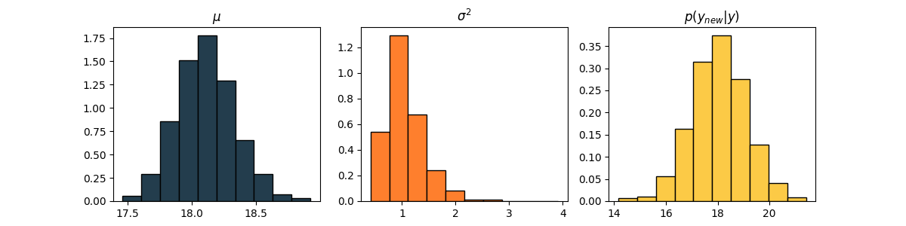

Getting to work
Three to four mornings a week, I walk to one of the Genentech shuttle buses, hop on, fall asleep, and wake up slightly disoriented as we arrive on campus. On the other days, I bike or run to work. To some extent this walk is a part of my routine, and when something becomes part of my routine I want to optimize it.
In this case optimization means that I want to find the time by which I should leave from home that:
- Guarantees that I do not miss the bus
- Minimizes the time I had to wait for the bus to arrive
Both criteria are important; if I only cared about not missing the bus I could leave 6h before the bus departs and just wait there. It would definitely guarantee not missing the bus, but that’s ehm… not ideal. Conversely, I don’t ever want to be in the risk of missing the bus. It’s a balance of not stressing, while also not wasting time just waiting.
First I had to collect data 🔍. My process was simple, the moment I stepped out of the apartment door I started the stopwatch on my phone, as I reached the bus stop I paused it and took a screen shot of the time. This was something I kept up for about two months, which resulted in 19 datapoints - the math doesn’t fully add up because I forgot to time my walk multiple times…
With only 19 datapoints I could just have transferred the screenshots into a text file manually and used for any downstream analysis - but that’s no fun. Instead I uploaded all of the screenshots to my computer and processed them with a simple python script that: read the images, cropped the area around the watch’s face, and extracted the text from the crops using OCR. For the OCR I used pytesseract (a wrapper around Tesseract OCR) – this was very straightforward to use despite no prior experience. You can see some examples below 👇.
The red dashed box indicates the cropped out area, “time” is the time format and “minute” is the decimal format of the time.
This is a tiny minuscule dataset that doesn’t really hold up for rigorous
statistical analysis, but we can still play around with it just for fun!
We’re going to assume that the data follows a normal distribution, i.e.,
$$x \sim \mathcal{N}(\mu,\sigma)$$we then put some priors on our parameters $(\mu, \sigma)$
$$\mu \sim \mathcal{N}(20,1), \qquad \sigma \sim \textrm{Inverse-Gamma}(2,2) $$these are the conjugate priors, meaning the conditional probabilities for each parameter has a closed form (given the other parameter and the data). With this we can use Gibbs sampling to get the posterior of the parameters and the posterior predictive.
$$ \mu_* | \sigma_{*}^2, X \sim \mathcal{N}(\hat{\mu}, \hat{\sigma}^2), \quad \textrm{with} \quad \hat{\mu} = \frac{\sigma_0^2\bar{x} + \sigma_*^2\mu_0}{\sigma_0^2 + \sigma_*^2} \qquad \hat{\sigma}^2 = \frac{\sigma_0^2\sigma_*^2}{\sigma_0^2 + \sigma_*^2}$$and
$$\sigma_*^2 | \mu_*,X \sim \textrm{Inverse-Gamma}(\hat{\alpha},\hat{\beta})$$$$ \hat{\alpha} = \alpha_0 + \frac{N}{2}, \qquad \hat{\beta} = \beta_0 + \frac{1}{2}\sum_{i=1}^{N}(x_i - \mu_*)^2$$We take 5000 samples and use the first 1000 as a burn-in, which gives us the following distributions 👇

Almost there 🎉 The only thing left to do was to decide how certain I want to be on making it in time for the bus. I went with 90-99% certainty, those are pretty good odds. With that we just need to find the 0.90-0.99 quantile, which we can do in two ways: using the mean posterior estimates of the parameters or the posterior predictive. Both options give fairly similar results.
From this, I should be in the clear if I leave approximately 21min (20.5min rounded up) before any bus departs. Leaving at this time, I should be able to stroll at my regular pace without ever having to worry about getting late. 😎
Fun thing is that a short while after I was done with these calculations i moved in with my amazing girlfriend ❤️ I’m obviously happier than ever, but since my route has changed I’m now back to the data collection step again! 💪